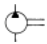
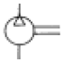
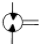
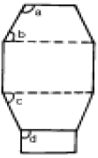
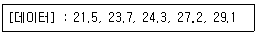

제선기능장 (2005-07-17 기출문제)
1과목: 임의 구분
1. 소결공장에서 가장 많이 쓰이고 있는 연속식 소결기는?
- Dwight Lloyd
- Greenawalt
- Rotary kiln
- Traveling grate
(정답률: 95%)

2. 철광석 중의 S 0.18%를 제거하기 위한 석회석량은 철광석 100Kg에 대하여 어느 정도(kg)인가? (단, 석회석의 유효석회분 51.45% , Ca와 S의 원자량은 각각 40 및 32 임.)
- 0.16
- 0.61
- 1.65
- 6.20
(정답률: 60%)
3. 강에서 상온 취성의 원인이 되는 주 원소는?
- Aℓ
- Mn
- P
- S
(정답률: 80%)
4. 강에서 나타나는 조직 중 경도가 가장 큰 것은?
- 솔바이트
- 펄라이트
- 오스테나이트
- 시멘타이트
(정답률: 87%)
5. 연 천인률 계산방법은?
- 재해건수/근로자수 ×1000
- 재해건수/근로자수 ×100
- 재해자수/근로자수 ×1000
- 재해자수/근로자수 ×100
(정답률: 85%)
6. 황동(Cu-Zn)계 평형상태도에서 α상의 결정구조는?
- BCC
- BCT
- FCC
- HCP
(정답률: 77%)
7. 고로(高爐)에 사용되는 Flux(용제)에 대한 설명 중 옳은 것은?
- 석회석은 950℃이상으로 하소한 소석회가 사용된다.
- 백운석은 광재(slag)의 점성을 크게 하기 위해 사용된다.
- 광재 중 적정 염기도를 유지하기 위해 석회석을 사용한다.
- 감람암은 고로의 CaO원(源)으로 사용된다.
(정답률: 91%)
8. 공기중에서 누설시 가장 낮은 곳에 체류하는 것은?
- 아세틸렌
- 수소
- COG
- 염소
(정답률: 89%)
9. 제철공장에서 부산물 가스는?
- BFG, LPG, SOG
- COG, LDG, OGN
- LNG, LPG, BFG
- LDG, COG, BFG
(정답률: 100%)
10. 6:4 황동에 1% 내외의 Fe를 첨가한 합금은?
- Skin metal(스킨메탈)
- Delta metal(델타메탈)
- Lead metal(리드메탈)
- Gun metal(건메탈)
(정답률: 85%)
11. 철광석의 환원성이 좋은 조건은?
- 기공률, 산화도가 높고 입도가 작고 2FeOㆍSiO2 가 낮을것
- 기공률이 높고 산화도와 입도가 작고 2FeOㆍSiO2가 낮을것
- 기공률, 산화도가 높고 입도가 작고 2FeOㆍSiO2 가 높을것
- 기공률, 입도가 크고 산화도가 낮고 2FeOㆍSiO2가 낮을것
(정답률: 79%)
12. 고로의 열풍로 조업에 있어서 Parallel 송풍 Mode의 특징으로 틀린 것은?
- 풍온을 상승시킬 수 있다.
- 열풍로 교체시 풍온 변화를 감소시킬 수 있다.
- Single 송풍 Mode에 비해 열효율이 낮다.
- 열풍변 수명 연장을 도모할 수 있다.
(정답률: 92%)
13. 유압도면에서 액체를 사용한 유압모터의 심볼(symbol)은?



(정답률: 89%)
14. 코크스는 석탄을 로내에 장입 공기를 차단하고 온도를 가열 건류하여 얻어지는 단단한 단괴상의 다공질을 말한다. 이때 로내에서 일어나는 코크스화 과정을 바르게 열거한 것은?
- 연화→용융→팽창→수축→고화→코크스괴화
- 용융→연화→고화→수축→팽창→코크스괴화
- 팽창→연화→용융→고화→수축→코크스괴화
- 고화→연화→수축→용융→팽창→코크스괴화
(정답률: 86%)
15. 자성 광물과 비자성 광물의 경우 그 자성의 차이를 이용하여 자장을 적용하여 분리하는 것을 무엇이라 하는가?
- flotation
- Magnetic seperation
- Elcetrostatic seperation
- Gravity seperation
(정답률: 95%)
16. 고로(용광로)공장의 공장자동화와 거리가 먼 것은?
- 열풍로 연소제어
- 연화 융착대 추정
- 잔존연와 두께 계산
- 풀림로제어 자동화
(정답률: 77%)
17. 순철의 자기변태점(℃)은?
- 210
- 310
- 450
- 768
(정답률: 89%)
18. 코크스 중의 회분이 많아질 때 고로 조업에 미치는 영향으로 틀린 것은?
- 연료비의 상승
- 생산량의 저하
- 노열의 상승
- Slag 염기도의 저하
(정답률: 69%)
19. 황(S)은 강(鋼)의 품질을 나쁘게 하는 주요원소이다. 이 원소의 고로에서의 주된 장입원(裝入源)은?
- 코크스
- 정립광
- 소결광
- 석회석
(정답률: 77%)
20. 고로의 노정에서 발생된 조가스(청청전의 가스)중의 함진량과 열풍로에 사용할 수 있는 청정가스중의 함진량은?
- 조가스 25 - 40g/Nm3, 청정가스 10 - 20mg/Nm3
- 조가스 20 - 35g/Nm3, 청정가스 0.5 - 1mg/Nm3
- 조가스 10 - 30g/Nm3, 청정가스 5 - 10mg/Nm3
- 조가스 3-10g/Nm3, 청정가스 0.01-0.⑤ mg/Nm3
(정답률: 84%)
2과목: 임의 구분
21. 고로 조업에서 탈황반응을 촉진시키는데 도움이 안되는 것은?
- 고로 내의 용선 온도가 높을 것
- CaO/SiO2가 1.2 이상일 것
- 슬래그 양을 증가시킬 것
- (CaO+MgO)/(SiO2+Al2O3)을 낮출 것
(정답률: 74%)
22. 고로내에서 일어나는 Slag-metal 반응 중 관련이 가장 적은 것은?
- Fe-C반응
- [Si][Mn]환원 반응
- 탈황반응
- 탈인 산화 반응
(정답률: 71%)
23. 조습 송풍의 목적이라고 볼 수 없는 것은?
- 노황 안정
- 출선량 증가
- 연소대의 증대
- 광석비 저하
(정답률: 73%)
24. 원료탄의 성질에 관하여 기술한 것 중 틀린 것은?
- 석탄을 건류할 때 괴상의 코크스가 되는 것을 점결성이라고 한다.
- 역청탄에도 점결성의 강약이 있다.
- 점결성은 점착성과 코크스화성으로 구별할 수 있다.
- 괴상의 강도를 좌우하는 것을 점착성이라고 하며 점착상이 적은 것을 약점결탄이라고 한다.
(정답률: 73%)
25. 조습송풍의 효과로 틀린 것은?
- 생산성의 향상, 코크스비의 저하 등을 얻을 수 있다.
- 풍구 앞에서 수소가 발생하여 철광석을 환원한다.
- 보시가스의 온도상승을 억제해서 노황의 안정제로써 효과가 크다.
- 풍구앞 연소온도의 저하로 송풍온도를 낮출 수 있다.
(정답률: 75%)
26. 흑체에서 방출하는 반사의 강도로 온도를 측정하는 온도계는?
- 수은 알콜 온도계
- 광 고온계
- 저항 온도계
- 바이메탈 온도계
(정답률: 94%)
27. 풍구손상이 일어났을 때 나타나는 현상과 부합되지 않는 것은?
- 풍구 냉각배수 중의 노내가스 혼입
- 풍구 주변부의 누수
- 노정가스의 CO/CO2비 증대
- 노정가스 중의 수소함량 급상승
(정답률: 88%)
28. 다음 그림에서 Bosh angle은?

- a
- b
- c
- d
(정답률: 93%)
29. 소결 배합원료에 분 코크스가 과다하게 배합되었을 경우 일어나는 현상으로 틀린 것은?
- Grate Bar에 점착하여 설비사고를 유발할 수 있다.
- 배기 가스 온도를 상승시킨다.
- 소결광의 생산량이 증가한다.
- 소결광 중 FeO 성분이 많아질 수 있다.
(정답률: 82%)
30. 다음 중 자철광은?
- Calcium ferrite
- Hematite
- Magnetite
- Fayalite
(정답률: 85%)
31. 고로에서 고압조업의 효과로 틀린 것은?
- 송풍량의 증가가 가능하여 생산량이 증가한다.
- 노황이 안정된다.
- 장입물과 노내 가스와의 열교환이 잘 행해져 코크스 소비량(kg/t-P)이 증가한다.
- 연료비가 저하한다.
(정답률: 81%)
32. 열풍로 4기 교체에서 2기의 열풍로를 동시에 송풍할 수 있고 온도조절이 용이하며 효율적으로 온도를 올릴 수 있는 방법은?
- Single 송풍
- Staggered parallel 송풍
- Repead 송풍
- Strike 송풍
(정답률: 93%)
33. 공장에서 사용되는 제어기기중 마이컴의 응용 제품으로서 Relay, Timer, Counter 무접점 Relay 등의 기능을 내장한 전자장치는?
- 서멀 릴 레이
- 프로그래머볼 오프 릴레이(또는 시퀸스)
- 전자접촉기(컨덕터)
- 마이크로 스위치
(정답률: 92%)
34. 고로조업에서 이상이 발생되었을 경우의 방지대책과 관계가 없는 것은?
- 로내통기및 가스분포의 이상시에는 송풍량을 감소하고 장입광석량의 감량과 광재성분의 조정을 한다.
- 슬립, 걸림을 방지하기 위해서는 분광, 분코크스의 장입을 피하고 열균열성 광석의 장입량을 감소한다.
- 풍구의 손상시에는 노열을 높게 유지하며 손상된 풍구를 교환한다.
- 노상냉각시에는 송풍이 가능한 풍구를 확보함과 동시에 출선구와 출재구를 폐공한다.
(정답률: 76%)
35. 오토(OTTO)식 코크스로에서 장입탄 장입 중 정전시 조치사항으로 적합하지 못한 것은?
- 코크스로 건류시 발생 가스를 방산시킨다.
- 장입을 중단하고 비상조치를 취한다.
- 비상조치 후 이상 유무를 확인한다.
- 정전시에도 장입은 계속한다.
(정답률: 96%)
36. 철광석의 구비조건으로 틀린 것은?
- 철함유량이 많을 것
- 해로운 불순물을 적게 함유할 것
- 피환원성이 좋을 것
- 강도가 낮아야 할 것
(정답률: 92%)
37. COG(Coke Oven Gas)조성 중 가장 많이 함유된 성분은?
- CH4
- H2
- CO
- CO2
(정답률: 89%)
38. 고로의 유효높이를 표시하는 기준은?
- 노저에서 장입기준선 까지
- 풍구수준면에서 장입기준선 까지
- 출선구에서 장입기준선 까지
- 출재구에서 장입기준선 까지
(정답률: 92%)
39. 선철 Ton당 장입원료 중 Fe분의 합계가 950㎏이고 이 중 0.8%가 FeO로써 슬랙 중에 들어간다고 하면 슬랙 중의 FeO 무게는 약 몇 ㎏인가?
- 5.8
- 7.1
- 9.8
- 10.7
(정답률: 83%)
40. 코크스 제조시 원료탄을 장입하는 장탄구는 어느 곳의 어느 방향에 있는가?
- 탄화실 상부
- 연소실 측벽
- 소화탑 전방벽
- 축열식 후방벽
(정답률: 93%)
3과목: 임의 구분
41. KS의 표준시험편으로 인장시험을 하였더니 인장강도가 30(㎏/mm2)이었다. 최대하중 약 얼마인가? (단, 4호 시험편: D = 14mm)
- 4618㎏
- 51286㎏
- 13847㎏
- 3618㎏
(정답률: 65%)
42. 소결광 제조원료로써 적당하지 않은 것은?
- Blending Ore
- B.F 반광
- 분 Coke
- 분 Sludge
(정답률: 93%)
43. 다음 용제 중 산성물질은?
- FeO
- MgO
- SiO2
- MnO
(정답률: 90%)
44. 고로가스 청정 설비에 포함되지 않은 기기는?
- 전기집진기
- venturi scrubber
- 가스홀더(GAS HOLDER)
- dust catcher
(정답률: 93%)
45. Shaft부가 아래쪽으로 넓어지는 이유 중 틀린 것은?
- 장입물은 하강함에 따라 온도 상승으로 체적이 증가하기 때문이다.
- 가스는 상승함에 따라 체적이 감소하기 때문이다.
- 노벽과 장입물의 마찰을 적게하기 위해서이다.
- 분광석과 가스의 흐름을 증가시키기 위해서이다.
(정답률: 61%)
46. 유압회로의 구성 기구가 아닌 것은?
- 압력제어 밸브
- 알터네이터
- 유량제어 밸브
- 액튜에이터
(정답률: 87%)
47. 풍압이 한계 이상 올라갈 때 풍량이 비정상적으로 낮아져 역류현상을 일으키게 되는 것은?
- Hndging
- Flooding
- Charging
- Surging
(정답률: 87%)
48. 공구사용 후의 정리정돈법 중 가장 좋은 방법은?
- 지정된 공구상자에 보관한다.
- 창고 입구에 보관한다.
- 통풍이 좋은 임의의 개방된 장소에 보관한다.
- 방풍이 잘된 임의의 습한 장소에 보관한다.
(정답률: 91%)
49. 구조가 간단하고 성능이 좋아 많은 양의 기름을 수송하는데 가장 적합한 유압펌프는?
- 기어펌프
- 베인펌프
- 로브펌프
- 피스톤펌프
(정답률: 93%)
50. 고로(高爐)의 풍구로 부터 들어가는 압풍에 의하여 생기는 풍구앞의 공간은?
- Slopping
- Race way
- Emulsion
- Blowing in
(정답률: 97%)
51. Boudouard 반응식은?
- C + CO2 = 2CO
- C + 1/2ㆍO2 = CO
- H2O + C = CO + H2
- H2O + CO = CO2 + H2
(정답률: 91%)
52. 가공용 알루미늄 합금에서 용체화처리한 다음, 인공시효 경화 처리한 것은?
- T4 처리
- T5 처리
- T6 처리
- T7 처리
(정답률: 85%)
53. 다음 중 석회석(石灰石)의 조성을 맞게 나타낸 것은?
- CaS
- CaCO3
- Ca(OH)2
- CaCl2
(정답률: 93%)
54. 열풍로를 사용할 때의 현상으로 틀린 것은?
- 고가의 연료인 코크스가 절약된다.
- 풍구 이론연소온도가 상승한다.
- 출선량이 증가한다.
- 열풍로에는 코크스보다 값싼 연료를 사용할 수 없다.
(정답률: 90%)
55. 다음 중에서 작업자에 대한 심리적 영향을 가장 많이 주는 작업측정의 기법은?
- PTS법
- 워크 샘플링법
- WF법
- 스톱 워치법
(정답률: 86%)
56. 다음 데이터로부터 통계량을 계산한 것 중 틀린 것은?

- 중앙값(Me) = 24.3
- 제곱합(S) = 7.59
- 시료분산(s2) = 8.988
- 범위(R) = 7.6
(정답률: 76%)
57. 여력을 나타내는 식으로 가장 올바른 것은?
- 여력 = 1일 실동시간 × 1개월 실동시간 × 가동대수
- 여력 = (능력 - 부하) ⒡ 1/100
- 여력 = (능력 - 부하)/능력ㆍ⒡ 100
- 여력 = (능력 - 부하)/부하ㆍ⒡ 100
(정답률: 91%)
58. 다음 중 로트별 검사에 대한 AQL 지표형 샘플링검사 방식은 어느 것인가?
- KS A ISO 2859-0
- KS A ISO 2859-1
- KS A ISO 2859-2
- KS A ISO 2859-3
(정답률: 85%)
59. 다음 중 계량치 관리도는 어느 것인가?
- R 관리도
- nP 관리도
- C 관리도
- U 관리도
(정답률: 83%)
60. 생산보전(PM:Productive Maintenance)의 내용에 속하지 않는 것은?
- 사후보전
- 안전보전
- 예방보전
- 개량보전
(정답률: 90%)